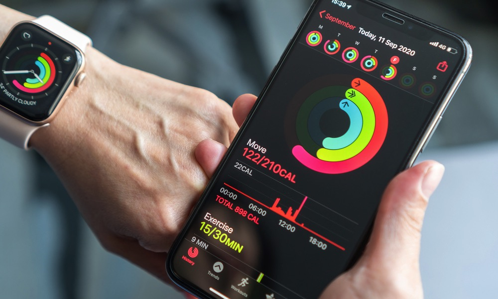

My Projects
-
Human Activity Recognition
Developed a model to predict human activities using machine learning and Python. Achieved an accuracy of 90% by leveraging advanced data preprocessing and real-time activity recognition algorithms, enabling 40% improved responsiveness in smart home applications.

-
Movie Recommendation System
Implemented a collaborative filtering-based recommendation system using R. Leveraged the
recommenderlablibrary to enhance user engagement by 25% with tailored suggestions. Visualized patterns with heatmaps, bar plots, and distribution charts for enhanced user insights.
-
Bank Management System
Designed a Bank Management System in C to manage customer profiles, transactions, and loan applications. The system supported real-time transaction processing and file I/O for data persistence. It also included a loan module with interest calculations and detailed reports.